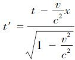

一个人如果不是数学家，当他听到“四维”的事物时，会激发一种像想起神怪事物时所产生的感觉而惊异起来。可是，我们所居住的世界是一个四维空时连续区这句话却是再平凡不过的说法。
空间是一个三维连续区。这句话的意思是，我们可以用三个数(坐标)x,y,z 来描述一个(静止的)点的位置，并且在该点的邻近处可以有无限多个点，这些点的位置可以用诸如x 1 ,y 1 ,z 1 的坐标来描述，这些坐标的值与第一个点的坐标x,y,z 的相应的值要多么近就可以有多么近。由于后一个性质所以我们说这一整个区域是个“连续区”，由于有三个坐标，所以我们说它是“三维”的。
与此相似，闵可夫斯基(Minkowski)简称为“世界”的物理现象的世界，就空-时观而言，自然就是四维的。因为物理现象的世界是由各个事件组成的，而每一个事件又是由四个数来描述的，这四个数就是三个空间坐标x,y,z 和一个时间坐标——时间量值t 。具有这个意义的“世界”也是一个连续区；因为对于每一个事件而言，其“邻近”的事件(已感觉到的或至少可设想到的)我们愿意选取多少就有多少，这些事件的坐标x 1 ,y 1 ,z 1 ,t 1 与最初考虑的事件的坐标x,y,z,t 相差一个无穷小量。过去我们不习惯于把具有这个意义的世界看作是一个四维连续区是由于在相对论创立前的物理学中，时间充当着不同于空间坐标的更为独立的角色。由于这个理由，我们一向习惯于把时间看作一个独立的连续区。事实上，按照经典力学来看，时间是绝对的，亦即时间与坐标系的位置和运动状态无关。我们知道，这一点已在伽利略变换的最后一个方程中表示出来(t′=t )。
在相对论中，用四维方式来考察这个“世界”是很自然的，因为按照相对论时间已经失去了它的独立性。这已由洛伦兹变换的第四方程表明：

还有，按照这个方程，甚至在两事件相对于K
的时间差Δt
等于零的时候，该两事件相对于K′
的时间差Δt′
一般也不等于零。两事件相对于K
的纯粹“空间距离”成为该两事件相K′
的“时间距离”。但是，对于相对论的公式推导具有重要作用的闵可夫斯基的发现并不在此。而是在他所认识到的这样的一个事实，即相对论的四维空时连续区在其最主要的形式性质方面与欧几里得几何空间的三维连续区有着明显的关系
[1]
。但是，为了使这个关系所应有的重要地位得以表现出来，我们必须引用一个与通常的时间坐标t
成正比的虚量 来代换这个通常的时间坐标t
。在这种情况下，满足(狭义)相对论要求的自然界定律取这样的数学形式，其中时间坐标的作用与三个空间坐标的作用完全一样。在形式上，这四个坐标就与欧几里得几何学中的三个空间坐标完全相当。甚至不是数学家也必然会清楚地看到，由于补充了此种纯粹形式上的知识，使相对论能为人们明了的程度增进不少。
来代换这个通常的时间坐标t
。在这种情况下，满足(狭义)相对论要求的自然界定律取这样的数学形式，其中时间坐标的作用与三个空间坐标的作用完全一样。在形式上，这四个坐标就与欧几里得几何学中的三个空间坐标完全相当。甚至不是数学家也必然会清楚地看到，由于补充了此种纯粹形式上的知识，使相对论能为人们明了的程度增进不少。
这些不充分的叙述只能使读者对于闵可夫斯基所贡献的重要观念有一个模糊的概念。没有这个观念，广义相对论(其基本观念将在本书下一部分加以阐述)恐怕就无法成长。闵可夫斯基的学说对于不熟悉数学的人来说无疑是难于接受的，但是，要理解狭义或广义相对论的基本观念并不需要十分精确地理解闵可夫斯基的学说，所以目前我就谈到这里为止，而只在本书第二部分将近结束的地方再谈它一下。
[1] 略微详细一些的论述见附录Ⅰ(2)。